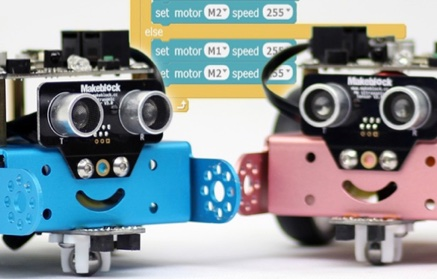

<section id="course-cat" data-sr>
  <div class="container">
    <course-bar></course-bar>
    <div class="row">
      <div class="col-md-6" >
          <h2>科技猫（8-14周岁）</h2>
          <p>本课程充分发挥中小学生的创意思维，通过学习游戏设计，控制mBot机器人等，掌握Scratch, Makeblock编程的概念，真正发现高科技的魅力。</p>
      </div>  
      <div class="col-md-5 col-md-offset-1" >
          
      </div>
    </div>
  </div>
</section>
